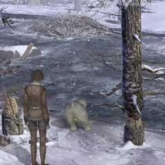
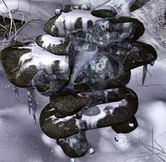

| 概要 | 地図 |
| 淡いヒント集 | ヒント集 | 的確なヒント集 |
| 攻略最短ルート |
| 場所選択に戻る |
雪山
|
追いついたのはいいけれど
動力がユーキーの整備車に乗り、雪山を駆け抜けたあなたはかろうじて機関車に追いついた。機関車が止まり距離としては目と鼻の先なのだが、目の前には深い谷が口を開けていた。 ・対岸へ移動する ・山小屋を探し中へ入る ・山小屋にある重要なアイテムを探す ・熊を追い返す

・対岸に渡るにはどうしたらよいか? ・右の倒れそうな木と、ビーバーを利用するしかない。 ・それでは、ユーキーの木をそらす方法を考えよう。

・ユーキーの好きそうな魚が祭壇に供えられている。 ・マッチを持っているが、燃やすものがないので探さなければならない。 ・罰は当たらないので、安心してえさにしてしまおう。 
・小屋の中である。 ・重要なアイテムはどこにあるだろうか? ・熊を追い返すヒントもここに隠されている。 
・魚を釣ることができる場所が山小屋にはある。 ・どの魚を釣ればよいだろうか? ・釣った魚をユーキーに食べさせないようにするにはどうしたらよいだろうか? ・答えは全て山小屋の中に隠されている。
| 次へ >> |
|
| 場所選択に戻る |
| 概要 | 地図 |
| 淡いヒント集 | ヒント集 | 的確なヒント集 |
| 攻略最短ルート |
Syberia II
| 目次へ戻る | ページの上部へ |